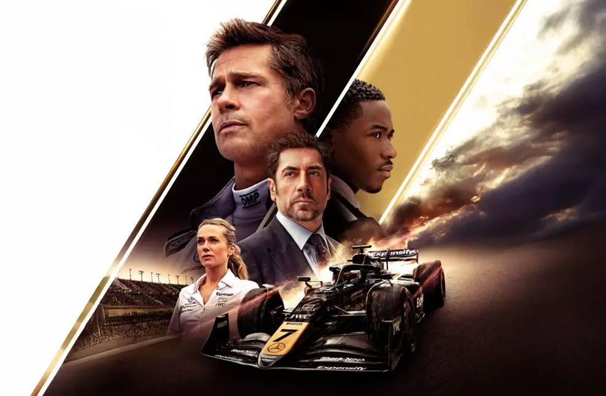

F1: O Filme Sequência ainda vai demorar, diz CEO da Formula 1
04/02/2026
Parece que o sinal verde para a sequência de "F1" (o filme de Brad Pitt) está vindo em marcha lenta, mas com boas perspectivas.
Em declarações recentes (fevereiro de 2026), o CEO da Fórmula 1, Stefano Domenicali, confirmou que, embora existam planos e conversas em andamento com a Apple, o projeto não deve sair do papel imediatamente. O foco agora é "digerir" o enorme sucesso do primeiro longa.
Aqui estão os pontos principais sobre esse "atraso" planejado:
Sucesso Absurdo: O primeiro filme superou a marca de US$ 630 milhões em bilheteria, tornando-se o maior sucesso da carreira de Brad Pitt e da história da Apple Original Films. Domenicali acredita que o filme precisa de tempo para "respirar" no streaming (Apple TV+) antes de uma sequência ser anunciada.
Qualidade em Primeiro Lugar: O CEO foi categórico: para haver um novo filme, ele precisa ser "crível, autêntico e novo". Não querem apenas repetir a fórmula.
Mudanças na F1 Real: Existem rumores de que a produção prefere esperar a implementação do novo regulamento técnico da Fórmula 1 (que entra em vigor em 2026) para que o filme reflita a nova era dos carros e motores sustentáveis.
O que já sabemos sobre a sequência
Envolvimento de Lewis Hamilton: O heptacampeão, que foi produtor e consultor do primeiro, já se reuniu com o diretor Joseph Kosinski e com Tim Cook (CEO da Apple) para discutir ideias.
Possível Cross-over: Joseph Kosinski (também diretor de Top Gun: Maverick) brincou sobre o desejo de unir Brad Pitt e Tom Cruise em um projeto futuro de corrida.
Novas Locações: O produtor Jerry Bruckheimer expressou interesse em filmar no GP de Melbourne, na Austrália, circuito que ficou de fora das filmagens principais do primeiro longa.